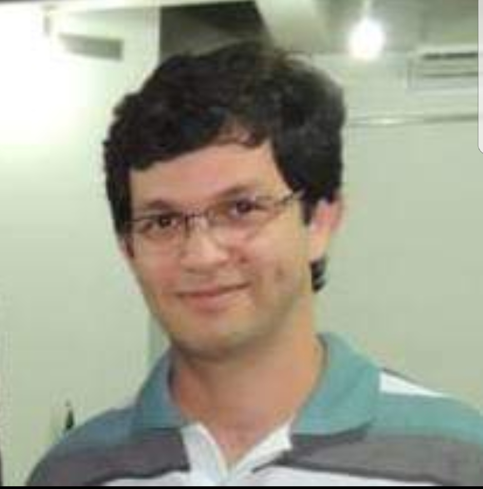

Possui graduação em Ciências da Computação pela Universidade Federal do Rio Grande do Norte(2006) e mestrado em Sistemas e Computação pela Universidade Federal do Rio Grande do Norte(2009). Atualmente é Professor Assistente VII da Universidade do Estado do Rio Grande do Norte. Tem experiência na área de Ciência da Computação, com ênfase em Sistemas de Computação.
Resumo

Maratona de Programação
Que tal participar da maior competição de programação do pais ? A maratona SBC de programação ocorre todos os anos.É uma competição que reúne estudantes de todo o Brasil, que dará a oportunidade de disputar a Final mundial que ocorre todos os anos em uma cidade diferente ao redor do mundo. É uma ótima oportunidade para testar seus conhecimento e um diferencial na sua carreira acadêmica e profissional. Na Universidade do Estado do Rio Garnde do Norte - UERN, ministro a disciplina de Desafios de Programação e também reúno equipes para disputar a maratona , para saber mais entre em contato comigo brunocruz@uern.br